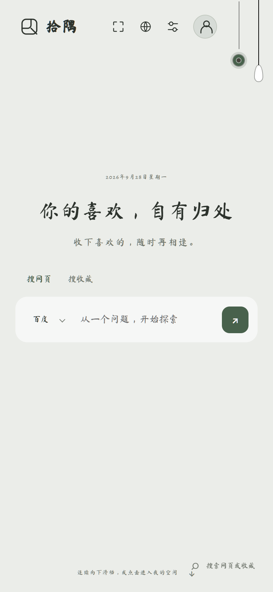
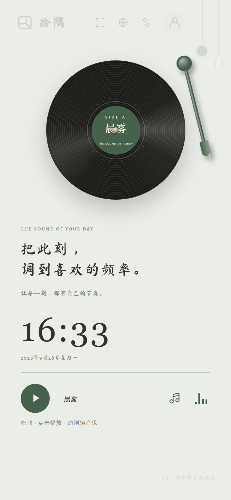
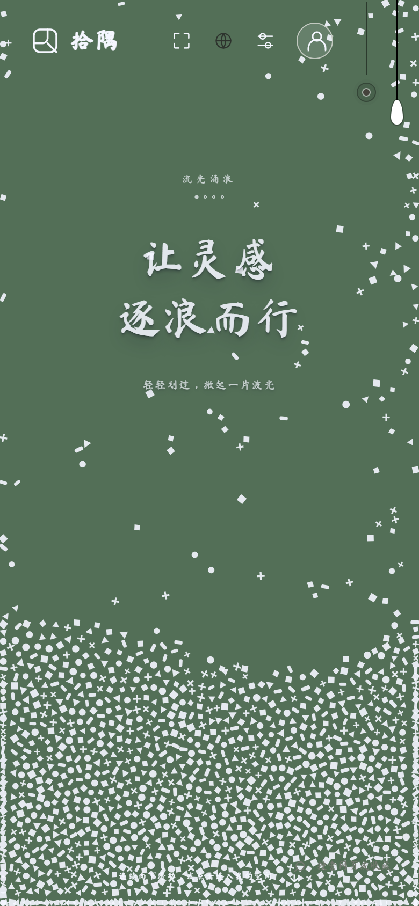
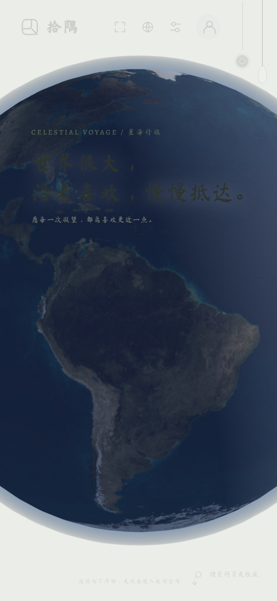
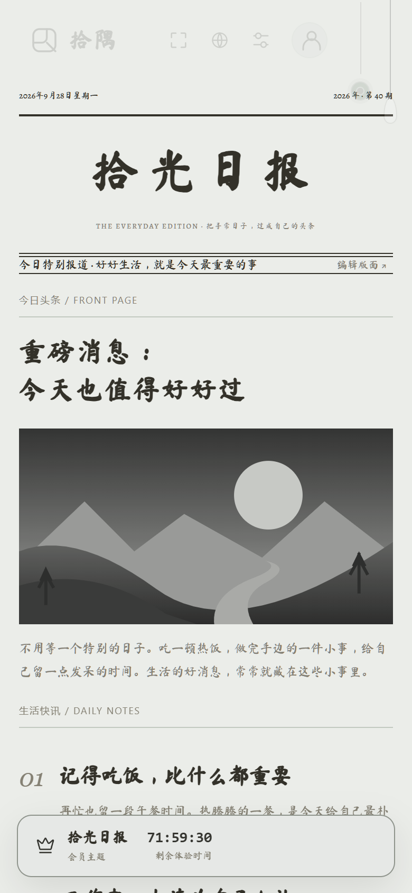

拾隅 SHIYU · 手机端真实页面
一个首页，
五种主题体验
不是氛围图。直接看系统里的主题页面，
每一种都能切换、能操作。

留白日常

黑胶时光

灵感流体

星海行旅

拾光日报
同一个拾隅首页 · 搜索、收藏与常用入口
点击首页左上角「拾隅」逐个切换主题
THEME 01 · HOME
留白日常
把搜索和喜欢的入口，安静地放在首页。
页面里有什么
顶部是主题切换与常用控制。中间是日期、问候和搜索框；底部可进入网页搜索或个人收藏。
试一下：点「搜网页 / 搜收藏」切换入口，再输入关键词。
真实手机页面 · 390 px 视口
THEME 02 · VINYL
黑胶时光
让唱片、时间与轻音乐，成为首页的一部分。
页面里有什么
唱片视觉、实时钟表、播放控制和曲目切换都在同一页。
试一下：点击唱片播放，再切换「晨雾、微光、晚风」。
真实手机页面 · 390 px 视口
THEME 03 · FLOW
灵感流体
页面会回应你的触摸，让主题不止是静态背景。
页面里有什么
水流效果铺在真实首页内容之上，搜索与顶部控制仍可使用。
试一下：切换到「灵感流体」，轻触或滑动页面，看流动如何回应动作。
真实手机页面 · 390 px 视口
THEME 04 · GLOBE
星海行旅
把可交互的立体地球，放进日常首页。
页面里有什么
地球是页面中的 3D 主题元素；标题、搜索入口与其他首页控件仍属于同一个系统页面。
试一下：切换主题后拖动地球旋转视角。发布前请用目标手机确认贴图加载正常。
真实手机页面 · 390 px 视口
THEME 05 · DAILY
拾光日报
把首页排成自己的日报，常用内容一眼可见。
页面里有什么
报纸式版面承载搜索、常用网址与精选空间，不是单独的海报模板。
试一下：点击「编辑版面」，挑选希望放在首页的内容。
真实手机页面 · 390 px 视口